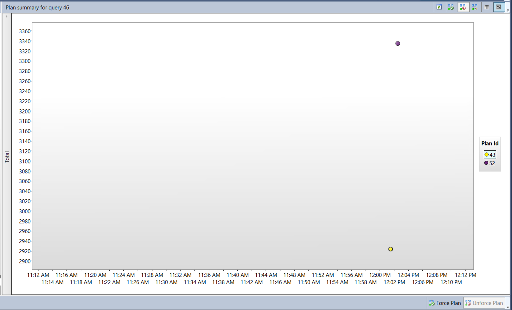
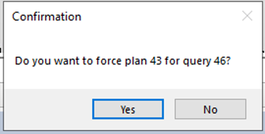

Lab 5 -Query Performance Troubleshooting
Estimated Time: 75 minutes
Lab files: The files for this lab are located in the D:\Labfiles\Query Performance folder.
Lab overview
The students will evaluate a database design for problems with normalization, data type selection and index design. They will run queries with suboptimal performance, examine the query plans, and attempt to make improvements within the AdventureWorks2017 database.
Lab objectives
After completing this lab, you will be able to:
-
Identify issues with database design
-
Evaluate queries against database design
-
Examine existing design for potential bad patterns such as over/under normalization or incorrect data types
-
-
Isolate problem areas in poorly performing queries
-
Run query to generate actual execution plan not using the GUI
-
Evaluate given execution plans (such as key lookup)
-
-
Use Query Store to detect and handle regressions
-
Run a workload to generate query statistics for Query Store
-
Examine Top Resource Consuming Queries to identify poor performance
-
Force a better execution plan
-
-
Use query hints to impact performance
-
Run workload
-
Change the query to use a Parameter value
-
Apply query hint to query to optimize for a value
-
Scenario
You have been hired as a Senior Database Administrator to help with performance issues currently happening when users query the AdventureWorks2017 database. Your job is to identify issues in query performance and remedy them using techniques learned in this module.
The first step is to review the queries the users are having issues with and make recommendations:
-
Identify issues with database design within AdventureWorks2017
-
Isolate problem areas in poorly preforming queries in AdventureWorks2017
-
Use Query Store to detect and handle regressions in AdventureWorks2017
-
Use Query Hints to impact performance in AdventureWorks2017
Note: The exercises ask you to copy and paste T-SQL code. Please verify that the code has been copied correctly, with the proper line breaks, before executing the code.
Exercise 1: Identify issues with database design in AdventureWorks2017
Estimated Time: 15 minutes
The main task for this exercise is as follows:
-
Examine the query and identify why you are seeing a warning and what that warning is.
-
Come up with two ways to fix the issue.
-
Change the query to resolve the issue.
-
Suggest a database design change to fix the issue.
-
Task 1: Examine the query and identify the problem.
-
From the lab virtual machine, start SQL Server Management Studio (SSMS).

-
You will be prompted to connect to your SQL Server.
Enter the server name LON-SQL1, and ensure that Windows Authentication is selected, and click connect.
- Open a new query window. Copy and paste the code below into your query window.
USE AdventureWorks2017;
SELECT BusinessEntityID, NationalIDNumber, LoginID, HireDate, JobTitle
FROM HumanResources.Employee
WHERE NationalIDNumber = 14417807;
-
Click on Include Actual Execution Plan icon as shown below before running the query or type CTRL+M. This will cause the execution plan to be displayed when you execute the query.

-
Click the execute button to execute this query.
-
Navigate to the execution plan, by clicking on Execution plan tab in the results panel in SSMS. In the execution plan, move your mouse over the SELECT operator. You will note a warning message identified by an exclamation point in a yellow triangle as shown below. Identify what the Warning Message tells you.

An Implicit Conversion is causing a performance issue.
Task 2: Identify two ways to fix the warning issue
The structure for the table is shown in the follow data definition language (DDL) statement.
CREATE TABLE [HumanResources].[Employee](
[BusinessEntityID] [int] NOT NULL,
[NationalIDNumber] [nvarchar](15) NOT NULL,
[LoginID] [nvarchar](256) NOT NULL,
[OrganizationNode] [hierarchyid] NULL,
[OrganizationLevel] AS ([OrganizationNode].[GetLevel]()),
[JobTitle] [nvarchar](50) NOT NULL,
[BirthDate] [date] NOT NULL,
[MaritalStatus] [nchar](1) NOT NULL,
[Gender] [nchar](1) NOT NULL,
[HireDate] [date] NOT NULL,
[SalariedFlag] [dbo].[Flag] NOT NULL,
[VacationHours] [smallint] NOT NULL,
[SickLeaveHours] [smallint] NOT NULL,
[CurrentFlag] [dbo].[Flag] NOT NULL,
[rowguid] [uniqueidentifier] ROWGUIDCOL NOT NULL,
[ModifiedDate] [datetime] NOT NULL
) ON [PRIMARY]
- Fix the query using code as a solution.
Identify what column is causing the implicit conversion and why.
If you review the query from Task 1, you will note the value compared to the NationalIDNumber column in the WHERE clause is entered as a number, since it is not a quoted string. After examining the table structure you will find this column in the table is using the nvarchar(15) datatype and not the int or integer data type. This data type inconsistency causes the optimizer to implicitly convert the constant to a nvarchar upon execution causing additional overhead to the query performance with a suboptimal plan.
- Change the code to resolve the implicit conversion and rerun the query. Remember to turn on the Include Actual Execution Plan (Ctrl+M) if it is not already on from the exercise above. Note the warning is now gone.
By changing the WHERE clause so that the value compared to the NationalIDNumber column matches the column’s data type in the table, you can get rid of the implicit conversion. In this scenario just adding a single quote on each side of the value changes it from a number to a character string. Keep the query window open for this query.
SELECT BusinessEntityID, NationalIDNumber, LoginID, HireDate, JobTitle
FROM HumanResources.Employee
WHERE NationalIDNumber = '14417807'

- Fix the query using database design changes.
To attempt to fix the index, open a new query window, and copy the query below to change the column’s data type. Attempt to execute the query by clicking Execute.
ALTER TABLE [HumanResources].[Employee] ALTER COLUMN [NationalIDNumber] INT NOT NULL;
The changes to the table would solve the conversion issue. However this change introduces another issue that as a database administrator you need to resolve. Since this column is part of an already existing nonclustered index, the index has to be rebuilt/recreated in order to execute the data type change. This could lead to extended downtime in production, which highlights the importance of choosing the right data types in your design.
Msg 5074, Level 16, State 1, Line 1The index ‘AK_Employee_NationalIDNumber’ is dependent on column ‘NationalIDNumber’.
Msg 4922, Level 16, State 9, Line 1
ALTER TABLE ALTER COLUMN NationalIDNumber failed because one or more objects access this column.
- In order to resolve this issue, copy and paste the code below into your query window and execute it by clicking Execute.
USE AdventureWorks2017
GO
DROP INDEX [AK_Employee_NationalIDNumber] ON [HumanResources].[Employee]
GO
ALTER TABLE [HumanResources].[Employee] ALTER COLUMN [NationalIDNumber] INT NOT NULL;
GO
CREATE UNIQUE NONCLUSTERED INDEX [AK_Employee_NationalIDNumber] ON [HumanResources].[Employee]
( [NationalIDNumber] ASC
);
GO
- Rerun the original query without the quotes.
USE AdventureWorks2017;
SELECT BusinessEntityID, NationalIDNumber, LoginID, HireDate, JobTitle
FROM HumanResources.Employee
WHERE NationalIDNumber = 14417807;
Note that the execution plan no longer has a warning message.
Exercise 2: Isolate problem areas in poorly performing queries in AdventureWorks2017
Estimated Time: 30 minutes
The tasks for this exercise is as follows:
-
Run query to generate the actual execution plan.
-
Evaluate given execution plans (such as key lookup).
Task 1: Run a query to generate the actual execution plan
There are several ways to generate an execution plan in SQL Server Management Studio. You will use the same query from Exercise 1. Copy and paste the code below into a new query window and execute it by clicking Execute.
Using the SHOWPLAN_ALL setting we can get the same information as we did in the last exercise but in the results pane instead of the graphical result.
USE AdventureWorks2017;
GO
SET SHOWPLAN_ALL ON;
GO
SELECT BusinessEntityID
FROM HumanResources.Employee
WHERE NationalIDNumber = '14417807';
GO
SET SHOWPLAN_ALL OFF;
GO
This shows you a text version of the execution plan.

Task 2: Resolve a Performance Problem from an Execution Plan
- Copy and paste the code below into a new query window. Click on Include Actual Execution Plan icon before running the query, or type CTRL+M. Execute the query by clicking Execute. Make note of the execution plan and the logical reads in the messages tab.
SET STATISTICS IO, TIME ON;
SELECT SalesOrderID, CarrierTrackingNumber, OrderQty, ProductID, UnitPrice, ModifiedDate
FROM AdventureWorks2017.Sales.SalesOrderDetail WHERE ModifiedDate > '2012/05/01' AND ProductID = 772;
When reviewing the execution plan you will note there is a key lookup. If you move your mouse over the icon, you will see that the properties indicate it is performed for each row retrieved by the query. You can see the execution plan is performing a Key Lookup operation.
To identify what index needs to be altered in order to remove the key lookup, you need to examine the index seek above it. Hover over the index seek operator with your mouse and the properties of the operator will appear. Make note of the output list as shown below.

- Fix the Key Lookup and rerun the query to see the new plan. Key Lookups are fixed by adding a COVERING index that INCLUDES all columns being returned or searched in the query. In this example the index only had ProductID. If we add the output list columns to the index as included columns, and add the other search column (ModifiedDate) as a key column, then the Key Lookup will be removed. Since the index already exists you either have to DROP the index and recreate it or set DROP_EXISTING=ON in order to add the columns. Note ProductID is already part of the index and does not need to be added as an included column.
CREATE NONCLUSTERED INDEX IX_SalesOrderDetail_ProductID
ON [Sales].[SalesOrderDetail] (ProductID, ModifiedDate)
INCLUDE (CarrierTrackingNumber,OrderQty, UnitPrice)
WITH (DROP_EXISTING = ON);
GO
- Rerun the query from Step 1. Make note of the changes to the logical reads and execution plan changes
Exercise 3: Use Query Store to detect and handle regression in AdventureWorks2017.
Estimated Time: 15 minutes
The tasks for this exercise are as follows:
-
Run a workload to generate query statistics for QS
-
Examine Top Resource Consuming Queries to identify poor performance
-
Force a better execution plan.
Task 1: Run a workload to generate query stats for Query Store
- Copy and paste the code below into a new query window and execute it by clicking Execute. Make note of the execution plan and the logical reads in the messages tab. This script will enable the Query Store for AdventureWorks2017 and sets the database to Compatibility Level 100
USE master;
GO
ALTER DATABASE AdventureWorks2017 SET QUERY_STORE = ON;
GO
ALTER DATABASE AdventureWorks2017 SET QUERY_STORE (OPERATION_MODE = READ_WRITE);
GO
ALTER DATABASE AdventureWorks2017 SET COMPATIBILITY_LEVEL = 100;
GO
- From the menu in SQL Server Management Studio, select File > Open > File. Navigate to the D:\Labfiles\Query Performance\CreateRandomWorkloadGenerator.sql file. Click on the file to load it into Management Studio and then click Execute to execute the query.
-
Run a workload to generate statistics for Query Store. Navigate to the D:\Labfiles\Query Performance\ExecuteRandomWorkload.sql script to execute a workload. Click execute to run the script. After execution completes, run the script a second time to generate more data. Leave the query tab open for this query.
-
Copy and paste the code below into a new query window and execute it by clicking Execute. This script changes the database compatibility mode using the below script to SQL Server 2019 (150).
USE master;
GO
ALTER DATABASE AdventureWorks2017 SET COMPATIBILITY_LEVEL = 150;
GO
- Navigate back to the query tab from step 3 (ExecuteRandomWorkload.sql), and re-execute.
Task 2: Examine Top Resource Consuming Queries to identify poor performance
-
In order to view the Query Store you will need to refresh the AdventureWorks2017 database in Management Studio. Make sure that Management Studio is connected to the local SQL Server instance. Right click on database name and choose click refresh. You will then see the Query Store option under the database.

-
Expand Query Store node to view all available reports. Click on plus sign to expand Query Store reports. Select the Top Resource Consuming Queries Report by double-clicking on it.

The report will open as shown below.

Make sure that SQL Server Management Studio is maximized in size. Click configure in the top right.

In the configuration screen, change the filter for the minimum number of query plans to 2. Click Apply and close the configuration window.
-
Choose the query with the longest duration by clicking on the left most bar in the bar chart in the top left portion of the report.

This will show you the query and plan summary for your longest duration query in your query store.
Task 3: Force a better execution plan
-
Navigate to the plan summary portion of the report as shown below. You will note there are two execution plans with widely different durations.

-
Click on the Plan ID with the lowest duration (this is indicated by a lower position on the Y-axis of the chart) in the top right window of the report. In the graphic above, it’s PlanID 43, but you’ll probably have a different PlanID. Click on the plan ID next to the Plan Summary chart (it should be highlighted like in the above screenshot).
-
Click on Force Plan under the summary chart. A confirmation window will popup, choose Yes to force the plan.

Once forced you will see that the Forced Plan is now greyed out and the plan in the plan summary window now has a check mark indicating is it forced.

-
Close all your query windows, and the Query Store report.
Exercise 4: Use query hints to impact performance in AdventureWorks2017
Estimated Time: 15 minutes
The main task for this exercise is as follows:
-
Run a workload.
-
Change query to use a parameter
-
Apply query hint to query to optimize for a value and re-execute.
Task 1: Run a workload
-
Open a New Query window in SQL Server Management Studio. Click on Include Actual Execution Plan icon before running the query or use CTRL+M.
-
Execute the query below. Note that the execution plan shows an index seek operator.
sqlUSE AdventureWorks2017 GO SELECT SalesOrderId, OrderDate FROM Sales.SalesOrderHeader WHERE SalesPersonID=288; -
Now run the next query. The only change is that the SalesPersonID value being searched for is 277. Note the Clustered Index Scan operation in the execution plan.
sqlUSE [AdventureWorks2017] GO SELECT SalesOrderId, OrderDate FROM Sales.SalesOrderHeader WHERE SalesPersonID=277;Based on the column statistics the query optimizer has chosen a different execution plan because of the different value used in the WHERE clause. Because this query uses a constant in its WHERE clause, the optimizer sees each of these queries as unique and generates a different execution plan for each one.
Task 2: Change the query to use a parameterized stored procedure and use a Query Hint
-
Open a New Query window. Click on Include Actual Execution Plan or use CTRL+M.
-
Create a parameterized stored procedure so that the value to be searched for can be passed as a parameter instead of a hard-coded value in the WHERE clause. You should ensure that the data type of your parameter matches the data type of the column in the target table. Copy and execute the code below.
sqlUSE AdventureWorks2017 GO CREATE OR ALTER PROCEDURE getSalesOrder @PersonID INT AS SELECT SalesOrderId, OrderDate FROM Sales.SalesOrderHeader WHERE SalesPersonID = @PersonID GO -
Call the procedure with a parameter value of 277. Copy and execute the following code:
sqlEXEC getSalesOrder 277 GOAs we saw before, when running the non-parameterized SELECT statement looking for a value of 277, the plan shows the use of a Clustered Index Scan.
-
Run the procedure again with a parameter value of 288. Copy and execute the following code:
sqlEXEC getSalesOrder 288 GOIf you examine the execution plan, you will note it is the same as it was for the value of 277. This is because SQL Server has cached the execution plan and is reusing it for the second execution of the procedure. Note that although the same plan is used for both queries, it is not necessarily the best plan.
-
Execute the following command to clear the plan cache for the AdventureWorks2017 database
sqlUSE AdventureWorks2017 GO ALTER DATABASE SCOPED CONFIGURATION CLEAR PROCEDURE_CACHE; GO -
Run the procedure again with a parameter value of 288. Copy and execute the following code:
sqlEXEC getSalesOrder 288 GOYou should notice the plan is now using the Nonclustered Index Seek operation. This is because the cached plan was removed and a new plan was created based on the new initial parameter value of 288.
-
Now recreate the stored procedure with a Query Hint. Because of the OPTION hint, the optimizer will create a plan based on a value of 288 and that plan will be used no matter what parameter value is passed to the procedure.
Execute the procedure multiple times and note that it now always uses the plan with the Nonclustered Index Seek. Try calling with the procedure with parameter values we haven’t seen yet, and you’ll notice that no matter how many rows are returned (or no rows are returned!) the plan will always use the Nonclustered Index Seek.
sqlUSE AdventureWorks2017 GO CREATE OR ALTER PROCEDURE getSalesOrder @PersonID INT AS SELECT SalesOrderId, OrderDate FROM Sales.SalesOrderHeader WHERE SalesPersonID = @PersonID OPTION (OPTIMIZE FOR (@PersonID = 288)); GO EXEC getSalesOrder 288; GO EXEC getSalesOrder 277; GO EXEC getSalesOrder 200; GO -
Close all your query windows.